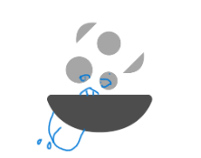

Hiperblog
Tu blog de cabecera
Este es el título atractivo e interesante del post
Y este es el párrafo de inicio donde vamos a explicar las cosas increíbles que se pueden hacer con ramas.

Los blogs son la mejor manera de compartir información y tus ideas. Mucho más que ir a conferencias o salir en Youtube.
Suscribete y dale like